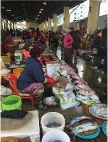
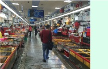

Perspective on Traditional Market Model – Part 1: The fish market in Busan
When tourists visit any destination, they often want to learn about the local culture, history, standard of living, and customs. Traditional markets are an interesting place to explore the local culinary culture, eating habits, income levels, and specialties. During my trip to South Korea in November 2018, I also visited the Busan Fish Market. So, what did I discover when I visited this market in Korea?
Busan Fish Market
The Busan Fish Market is divided into two main areas:
- The outdoor area: focusing on selling squid, octopus, shellfish, and other fresh fish.
- The indoor area: focusing on fresh seafood and stalls serving dishes made from that seafood.
There are several details we can notice here:
- Cleanliness and hygiene are exceptional throughout the market.
- No bad odor, even in the wet area.
- Most of the seafood is kept alive in clean tanks.
- Everything is neatly organized, which makes shopping at the wet market a pleasant experience.

Image 1: Busan Fish Market - A traditional market model in South Korea

Image 2: Stalls inside the fish market
Fresh Seafood Stalls Inside the Fish Market
Step inside the indoor section of the fish market, and you will be greeted by a vibrant array of stalls displaying the day's fresh catch. From large crabs and lobsters to various shellfish, the diversity is truly impressive.
Each stall is operated by local vendors who maintain clean, well-aerated water tanks to keep the seafood alive and fresh. Unlike typical wet markets that have a strong, lingering odor, the indoor market in Busan is remarkably clean due to constant washing and drainage systems.
A unique feature of this market is the connection between the fish stalls on the ground floor and the dining restaurants on the second floor. Customers can choose their favorite seafood at the ground level and have it cooked to order upstairs immediately.
Whether you prefer raw sashimi, grilled fish, or a spicy seafood soup, the chefs can prepare it in traditional styles. This integration of retail and dining offers tourists a highly interactive and memorable culinary experience.
Outdoor fish market area
The outdoor fish market area is another must-visit section of the Busan fish market. Extending along the harbor, this open-air space is filled with traditional stalls sheltered by colorful parasols and awnings.
Here, vendors specialize in dried seafood, seaweed, and various fermented fish products. The brisk sea breeze and the sounds of seagulls create an authentic maritime atmosphere that contrasts with the indoor facility.
Walking through the outdoor stalls, visitors can observe the traditional way of preparing and sun-drying fish, a method passed down through generations. This area offers a unique glimpse into the daily life of local fishermen and merchants.

Image 3: Outdoor fish market area inside the fish market